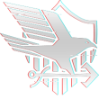
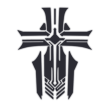
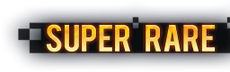
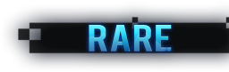
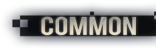

In Azur Lane, the ships are brought from real life navies. In total, there 9 Navies that is adopted. These navies have been renamed by the Azur Lane developers to avoid any potential copyright infringement sues by the respective countries. Below are the navies and their real world counterparts
|  | Eagle Union | The game counterpart of the United States Navy |
|---|---|---|
| Royal Navy | The game counterpart of Her Majesty's Ship, the Royal Navy | |
| Sakura Empire | The game counterpart of the Imperial Japanese Navy | |
|  | Iron Blood | The game counterpart of the Kriegsmarine Ship Navy |
| Dragon Empery | The game counterpart of the Republic of China Navy and the People's Liberation Army Navy. | |
| Sardegna Empire | The game counterpart of the Italian Regia Marina. | |
| Northern Parliament | The game counterpart of the Soviet Navy, the Voyenno-Morskoi Flot. | |
| Vichya Dominion | The game counterpart of the Marine Nationale Forces of Vichy France. | |
 |
Iris Libre | The game counterpart of the Free French Naval Forces. Also known as the Forces Navales Françaises Libres or FNFL, these ships escaped to British Port before the surrender, subsequently boarded by the British, and converting these ships to the FFNF. |
In Azur Lane, the ships uses classifications that exists in real life, or had existed back during war times. These classifications are used to describe the type and characteristics of a ship. For example, destroyers are fast and pack powerful torpedoes and light cruisers are also fast but has less torpedo firepower. There are a total of 13 classes that Azur Lane adopts into the game, from Heavy Cruisers to Aircraft Carriers to Submarines. Below are the description and some background of the usage and equipment of each classes.
| Destroyers | Destroyers are speed-based light ships. They are equipped with weak guns and much less health than cruisers, but carry powerful Torpedoes. They are fast, maneuverable and long-enduranced warship, intended for escorting larger ships in a fleet to defend against other enemy Destroyers. In Azur Lane, Destroyers are the fastest, yet most fragile of the 3 Escort Ships and are also equipped with weak to mediocre but fast-firing cannons and devastating torpedoes. They vary stats among nations, IJN destroyers tend to have weak firepower but powerful torpedoes and USN destroyers tend to be more balanced, for example. | |
| Light Cruisers | Shortened from the phrase "Light Armoured Cruisers", light cruisers was a classification used to refer to small to medium warships, equipped with a protective belt and deck. Compared to other contemporary ships, light cruisers were lighter and smaller. Nevertheless, they were still considered as actual cruisers, retaining independant and longer range of action. They served many roles throughout history, primarily as convoy escorts and destroyer command ships, while also acting as scouts and fleet support vessel for battle fleets. In Azur Lane, light cruisers are an escort ship type and have a balanced stats, in terms of speed, survivability and firepower, varying amongst the ships. They tend to usually be loaded with a medium caliber naval gun as their main weapon and torpedoes as their secondary weapons. | |
| Heavy Cruisers | Heavy cruisers was a type of naval warship, usually equipped with a 203mm calibre gun, bounded by the Washington and London Naval Treaties In Azur Lane, they are the heavy hitters of the Escort Fleet. In exchange for speed, mobility and evasion, they are able to deals massive damage to other similar ships and act as shields for fragile Destroyer and Light Cruiser type ships, in exemption with IJN Heavy Cruisers, which are more mobile and evasive but less durable. They equip Torpedoes as secondary guns, like other escort ships, in exemption with USN ships in which they equip Destroyer-type guns instead | |
| Monitors | Monitor ships are a heavily armed warship used primarily for surveillance and scouting. Named and design preceeded after USS Monitor. Carried disproportionately large guns, but they are neither fast nor strongly armoured. In Azur Lane, Monitors are weak but powerful shelling-support warships and consume less fuel, unlike Battleships and battlecruisers. | |
| Large Cruisers | Unlike Heavy Cruisers, Large Cruisers are not bounded by the Washington and London Naval Treaties. Thus, several nations started developing counter cruiser ships, wuth high speed, ironclad armour, and guns stronger than 8-inch guns. All designs of the class was not too successful. They came late, when naval airspace power was quickly displacing gun-armed ships. Cost-wise, they are not effective in their escort roles and in development. Some examples of the class include the Japanese Azuma-class, Soviet Kronshtadt-class, Dutch Deisgn 1047, and the American Alaska-class. Only the Alaskas had some ships completed, only to be scrapped and mothaballed not too long after. Alternatively named "super cruisers", "unrestricted cruisers" and "battlecruisers". | |
| Battleships | A battleship is a large armoured warship with a main battery consisting of large caliber guns. During the late 19th and early 20th centuries the battleship was the most powerful type of warship, and a fleet centered around the battleship was part of the command of the sea doctrine for several decades. By WWII however, batteships were made obsolote against the faster destroyers, secretive submarines and versatile aircraft carriers, became increasingly useful. The term 'battleship' came into formal use in late 1880s to describe a type of ironclad warship, now referred as pre-dreadnought battleships. Battleships became symbols of naval dominance and national might and prowess, which played heavy roles in crucial diplomacy and military strategy. Played a less vital role in WWII than aircraft carriers, which made most nations mothball or scrap battleships. USN kept four battleships which were last used in the Gulf War in 1991, the last one of which was struck in the 2000s. | |
| Battlecruisers | A type of capital ship in the 1900s, Similar to battleships in terms of size, costs and armament, they generally carry less armour for faster speed. First designed in the United Kingdom around 1910 as a development to the armoured cruiser. It was meant to outspeed any ship of similar armament and hunt ships with slower, lesser armed ships by barraging them with heavy gunfire while evading combat with more stronger battleships. They were increasingly used alongside better armed battleships as its contruction increased, | |
| Aviation battleships | A hybridization the best of a Battleship and its guns, with the Carrier and air support, Aviation Battleships allow performance of both naval gun firing and lifting off aircrafts in exchange for the secondary gun, which made them unable to defend against incoming enemy ships. IJN Ise and Hyuuga were the only full coversion and and operational service for Aviation Battleships, converted to compansate for the loss of their carriers in the Battle of Midway. Never allocated planes, they were rendered pointless Due to the expense of conversion, the loss of firepower gave the ships a serious weakness due to the ferocity of US air strikes, giving the US a mightier airspace control. First attempted conversion was HMS Furious, but was converterted to full aircraft carrier as the short landing deck was deemed impractical. | |
| Aircraft Carriers |
Aircraft Carriers are the key players in naval warfare that provide air support for the fleet. They carry:
|
|
| Light Aircraft Carriers | Light aircraft carriers, or light fleet carrier, is an carrier smaller than normal carriers of a navy. Definitions of its type vary by country; They typically carry half or two-thirds aircrafts than a full-sized fleet carrier. Similar in concept to an escort carrier, it was intended for higher speeds to be deployed alongside fleet carriers instead. In Azur Lane, CVL has lower stats than CVs including lower Health Points. They can attack enemy submarines if equipped with ASW Aircraft. | |
| Repair ships | Repair ships are naval auxillary ships designed to provide support by maintenanace to warships. The two repair ships can heal their fleet mid-battle with their cranes and skills or by emergancy repairs out of battle. They have no offensive abilites, but upon limit break, can mount two AA guns. On the second limit break, they give additional ammo to the fleet, gain AA Gun efficiency and an extra AA Gun mount for each gun. The only two Repair Ships are Vestal and Akashi. | |
| Submarines | A submarine is a watercraft capable of independant operations underwater. Designs originally took off in 19th Century, for several navies to adopt. Its military uses are attack enemy suface ships, and other submarines, aircraft protection, blockade running and reconnaissance. IJN had submarines with the highest submerged speeds in WWII and could carry multiple aircraft, while equipped with oxygen-propelled Type 95 tank, one of the most advanced torpedoes of conflict. | |
| Submarine Carriers | Submarine Carriers were experimental submarines designed to launch seaplanes. |
In Azur Lane, there are multiple method of obtaining ships, with some of them being exclusive to those methods. The most popular method is by rolling the gacha, which is a luck-based lottery that rewards ships. On certain events, some ships get rate-ups, which are increased percentage of the ship appearing, for a limited time. Ship gacha is split based on the rarity and the type of the ships. Below is the rarity table and its drop rate.
| Rarity Logo | Rate Drop % | Rate-up Drop % | ||
|---|---|---|---|---|
| Light | Heavy | Special | ||
|  | 7% | +2% | ||
| 12% | +2.5% | |||
|  | 26% | 51% | +5.0% | |
|  | 55% | 30% | +10.0% | |
Azur Lane collaborated with the game World of Warships, due to how similar both games are in naval warfare. For Azur Lane, they obtained 12 Priority ships, all of which however, only reached design stage, and never actually went to the construction stage. In other words, these ships dont exists in real life, but only as a concept, which were ultimately scrapped after the end of WWII. Of the 12 ships, there is 2 ships which were categorized in a new and higher classification-(Decisive). These two ships, Azuma and Friedrich de Große, were concepted to be the strongest of their nation, essentially their flagship. However, due to the loss of both Germany and Japan in WWII, these conception never came to fruition. In Azur Lane, the Decisive ships are constructable, but, along with the other 10 Priority ships, require Research materials and 3 million EXP to obtain.
 |
 |
 |
 |
 |
 |
| Neptune | Monarch | Ibuki | Izumo | Roon | Saint Louis |
 |
 |
 |
 |
 |
 |
| Seattle | Georgia | Kitakaze | Azuma | Friedrich der Große |
Gascogne |


All animations are provided by animista.net
All Azur Lane resources are provided by azurlane.koumakan.jp.
All of the website made from scratch with blood, sweat and tears of Aqil Rifaie.